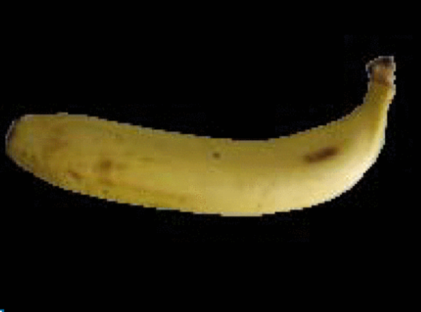
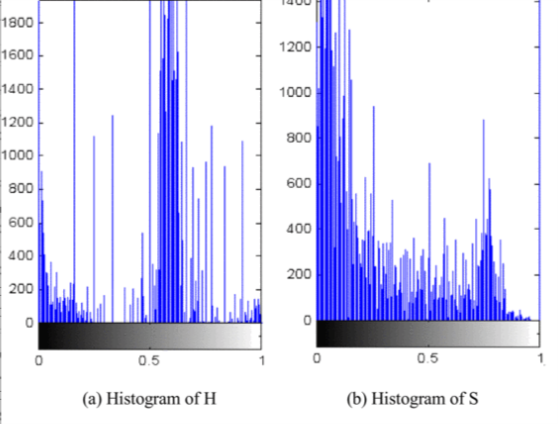
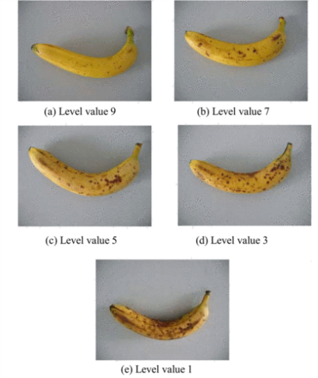

Previous Researches Based on Camera
Histogram based fruit grading
In the paper Study on Fruit Quality Inspection Based on Its Surface Color in Produce Logistics
, Yizhong Wang et al's fruit segmentation and grading are all based on the histogram of the image.
The paper first uses a segmentation on the banana based on the H component histogram. By carefully selecting H = 0.41 as a threshold, the paper can easily do a segmentation.



 First, for a given fruit, the paper let an expert to find some ideal fruits representing each maturity level from raw to ripe. Then it will use an equation to convert
the fruits multiple dimension color, for example, RGB, to a 1-D color space. Below is the equation that they used for the conversion.
First, for a given fruit, the paper let an expert to find some ideal fruits representing each maturity level from raw to ripe. Then it will use an equation to convert
the fruits multiple dimension color, for example, RGB, to a 1-D color space. Below is the equation that they used for the conversion.
Then a neuro network machine learning is used for the grading of fruit quality. The feature selected by the paper are still the histogram for the image. It first combines the features in the fewer levels. Then it implements a 3 layer neuro network to decide the banana's quality. After training and testing, the classification result is listed on the end of the paper.
Read the paper online